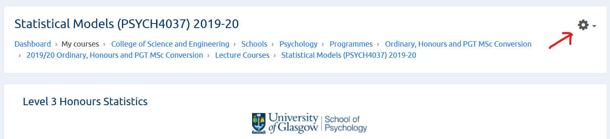

3 Adding and configuring a new assignment
On your Moodle course page, click on the cog symbol in the top right and then from the pull-down menu, choose “Turn editing on”.

You will see your course page divided up into sections. Scroll down to the relevant section and find the link named “+ Add an activity or resource” at the bottom of that section. Once you click this link, a pop-up dialog will appear allowing you to choose the activity type. Choose Assignment.

3.1 Adding Extra Time to an Assignment for Specific Users
After creating the assignment, go to “Edit” and then “User Overrides”.
Oct 21, 2019, -DJB
3.2 Link Anonymous Assignment IDs to Student IDs
On the main page for the course, click on the Settings (cog icon), select More.... Under Course Administration click the Reports tab, then select Assignment submission report. From that point on it should be straightforward.
Nov 18, 2019, -DJB